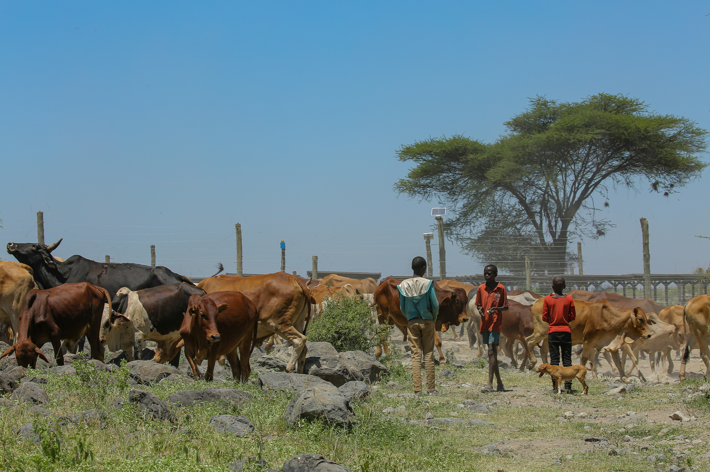

Our Services

Agro Trading
We connect farmers with markets and bulk buyers through direct trade in crops and livestock.
Import & Export
We facilitate international agro trade, ensuring quality handling, storage, and shipment.

Value Addition
We process maize, beans, and poultry into ready-to-sell products for both local and export markets.